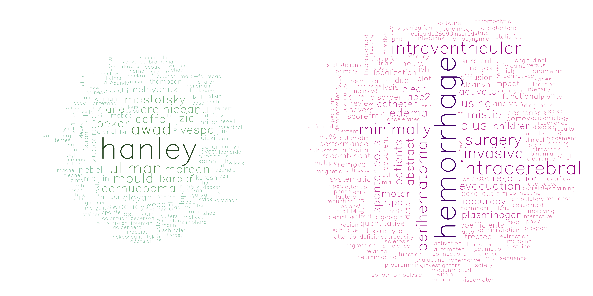

Talks and Presentations
- 2015 - Automated Intracerebral Hemorrhage Segmentation of CT Scans at Joint Statistical Meeting (JSM)
- 2015 - PItcHPERFECT: Primary Intracerebral Hemorrhage Prediction Employing Regression and Features Extracted from CT at Eastern North American Region (ENAR) International Biometric Society
- 2015 - Quantitative Localization and Predictive Performance of Intracranial Hemorrhage at International Stroke Conference (ISC)
- 2015 - Validated Automatic Brain Extraction of Head CT Images at Organization for Human Brain Mapping (OHBM)
- 2014 - Validated Automatic Brain Extraction of Head CT Images at Hopkins Imaging Conference
- 2014 - Reduction of motion-related artifacts in resting state fMRI using aCompCor at Hopkins Imaging Conference
- 2013 - Visualizing Brain Imaging in Interactive 3D at ENAR
- 2012 - Resting State Preprocessing and Motion Artifacts at Second Biennial Conference on Resting State / Brain Connectivity
- 2012 - Effects of preprocessing on motion-inuced artifacts in resting state fMRI at Society for Neuroscience (SfN)
Publications
You can view all my publications on my Google Scholar Citations page or my CV link above.
